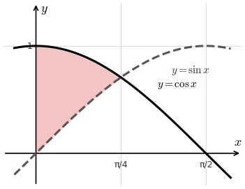
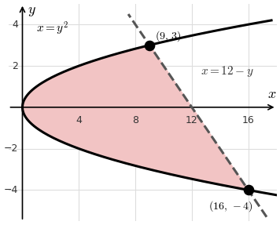

Lesson 3: Area Between Curves
Partition \([a, b]\) into subintervals of width \(\Delta x\). Each rectangle has height \(f(x_k) - g(x_k)\) and width \(\Delta x\), where \(f\) is the top curve and \(g\) is the bottom curve.
\[ \text{Area} = \lim_{n \to \infty} \sum_{k=1}^{n} \left(f(x_k) - g(x_k)\right)\Delta x \]
Area Between Curves
\[ \text{Area} = \int_a^b \left(f(x) - g(x)\right)dx \]
Find the area of the region enclosed by \(f(x) = \cos x\) and \(g(x) = \sin x\) over \(0 \le x \le \frac{\pi}{4}\).
On this interval, \(\cos x \ge \sin x\).
\[
\begin{aligned}
\int_0^{\pi/4} (\cos x - \sin x)\,dx &= \left[\sin x + \cos x\right]_0^{\pi/4} \\
&= \left(\frac{\sqrt{2}}{2} + \frac{\sqrt{2}}{2}\right) - (0 + 1) \\
&= \sqrt{2} - 1
\end{aligned}
\]

Sometimes it is easier to use horizontal rectangles. Each has length \(f(y_k) - g(y_k)\), where \(f\) is the right curve and \(g\) is the left curve, and width \(\Delta y\).
Area Between Curves (in y)
\[ \text{Area} = \int_c^d \left(f(y) - g(y)\right)dy \]
Find the area of the region enclosed by \(x = y^2\) and \(x = 12 - y\).
Find where the curves meet.
\[
\begin{aligned}
y^2 &= 12 - y \\
y^2 + y - 12 &= 0 \\
(y + 4)(y - 3) &= 0
\end{aligned}
\]
So \(y = -4\) and \(y = 3\). The right curve is \(x = 12 - y\).
\[
\begin{aligned}
\int_{-4}^{3} \left(12 - y - y^2\right)dy &= \left[12y - \frac{y^2}{2} - \frac{y^3}{3}\right]_{-4}^{3} \\
&= \frac{45}{2} - \left(-\frac{104}{3}\right) \\
&= \frac{343}{6}
\end{aligned}
\]
